Before
1 / 3
Skin as it looked on the day, before any treatment.
Fractional CO2 laser skin resurfacing, performed personally by consultant facial plastic surgeon Mr Gautham Ullas.
Do you see tired, uneven skin in the mirror, or fine lines around your mouth and eyes that creams no longer touch? We hear it every day, and we know how quietly it wears on your confidence. Fractional CO2 resurfacing removes damaged skin in precise micro columns and prompts your body to rebuild fresh collagen. Within weeks the surface is smoother, firmer and noticeably brighter. Skin you stop hiding and start showing off.
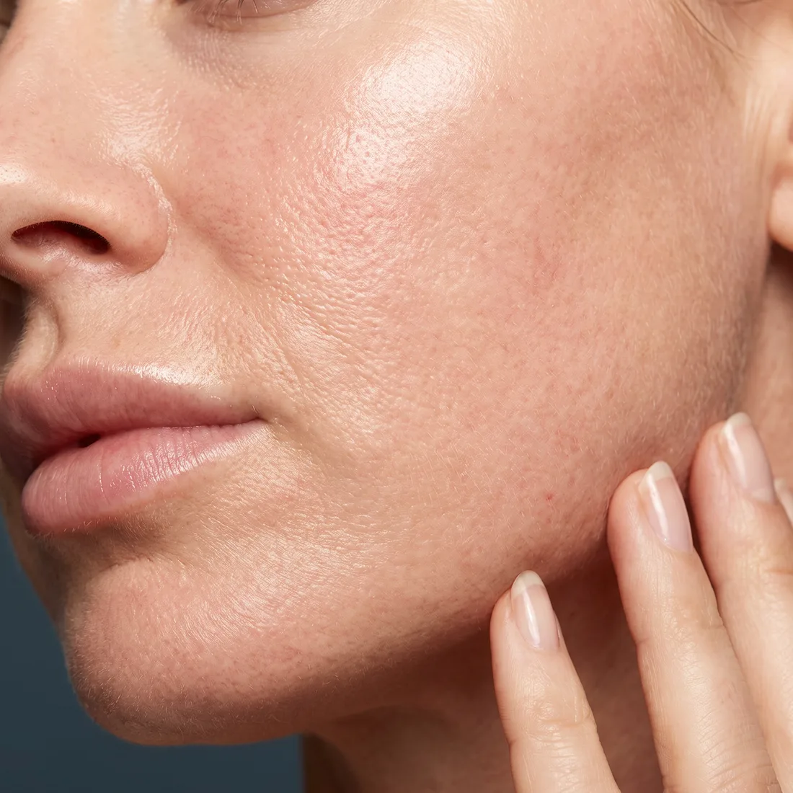
Everything most patients want to know before they read any further.
One patient, photographed from three angles at each stage of her recovery. Drag or use the arrows on any stage to see all three views.
Skin as it looked on the day, before any treatment.
Warm and pink, with the fine grid pattern of the treatment visible.
Redness settling, the treated surface starting to dry and tighten.
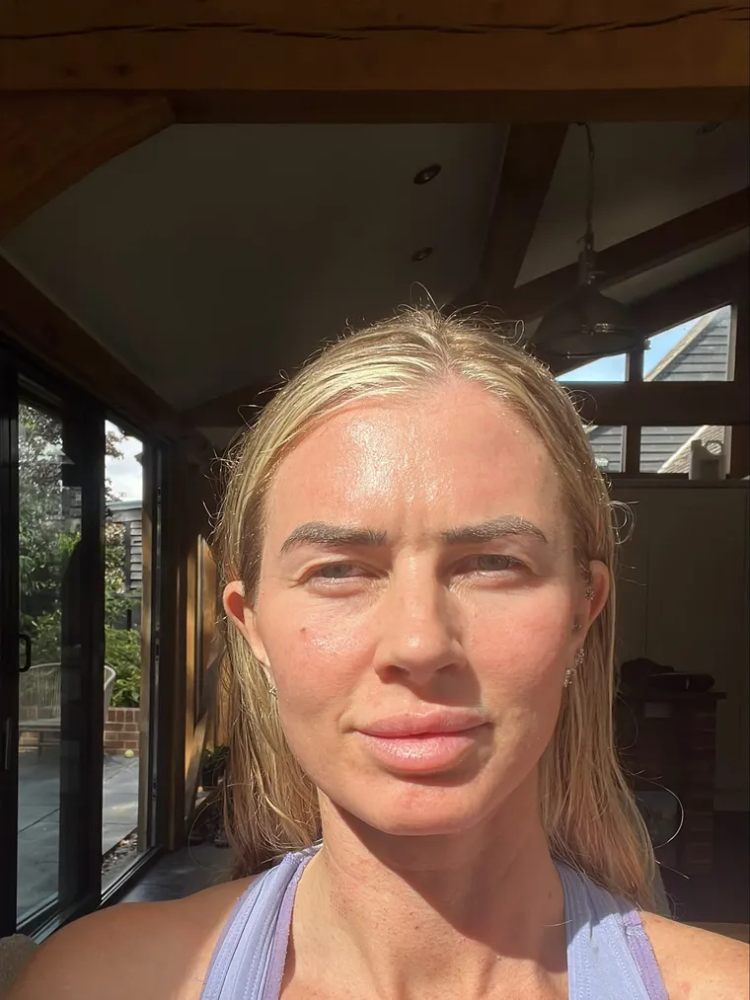
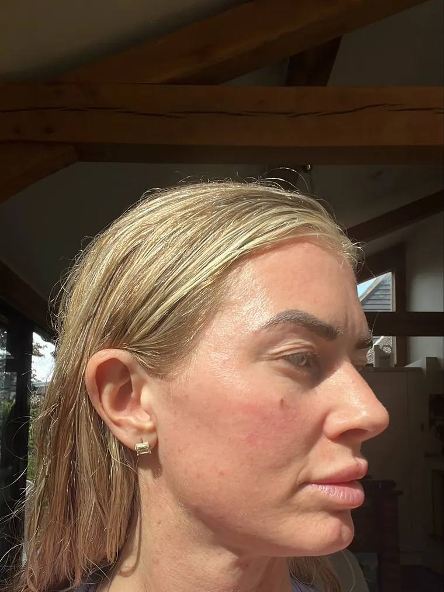

The surface has flaked away to reveal fresher skin underneath.
Individual results and recovery vary. Photographs are of a genuine patient of Mr Ullas and are shared with her consent.
Book a ConsultationIf you recognise yourself in any of these, fractional CO2 resurfacing is worth a conversation.
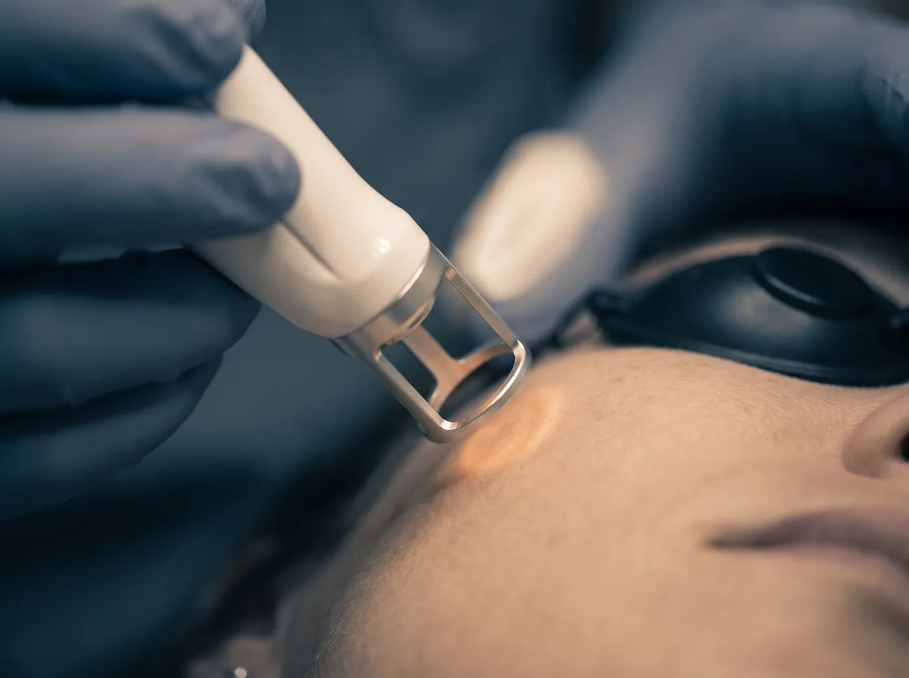
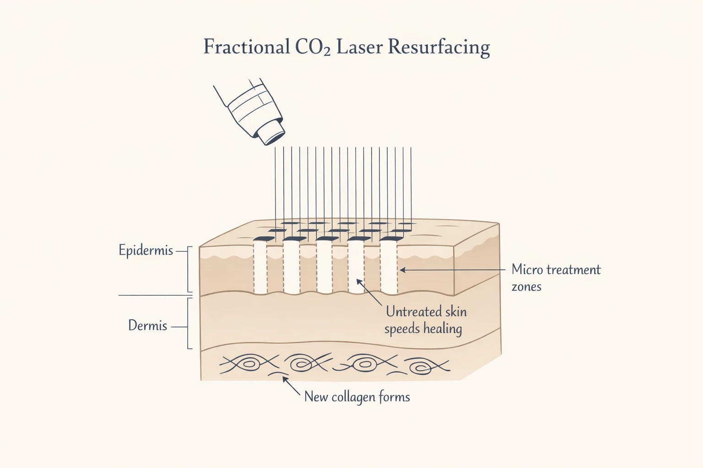
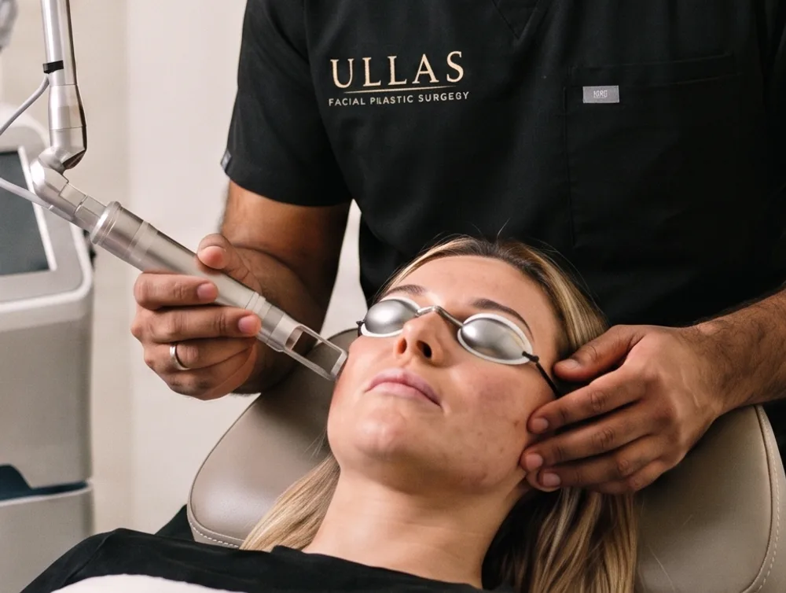
The laser places thousands of microscopic columns of energy into the skin in a fine grid. Each column removes a pinpoint of aged, damaged tissue and gently heats the layer beneath.
Because only a fraction of the surface is treated, the untouched skin between the columns acts as a living scaffold. It closes the treated zones quickly, which is why recovery takes days rather than the weeks of older, fully ablative lasers.
Over the following weeks your skin does the real work: it replaces the treated columns with fresh tissue and lays down new collagen underneath, so the surface becomes smoother, tighter and more even.
Every treatment on this page is delivered with Vjuve MD, a next generation fractional CO2 laser built for medical grade skin renewal. It is designed for exactly the concerns you have read about here: resurfacing, scar treatment, pigmentation reduction and fine line smoothing.
Its fractional beam creates thousands of precise micro channels in the skin, triggering your body's natural regeneration while leaving the surrounding surface untouched. The result is dramatic improvement in texture, tone and clarity, with smoother, firmer and more youthful looking skin, all without surgery.
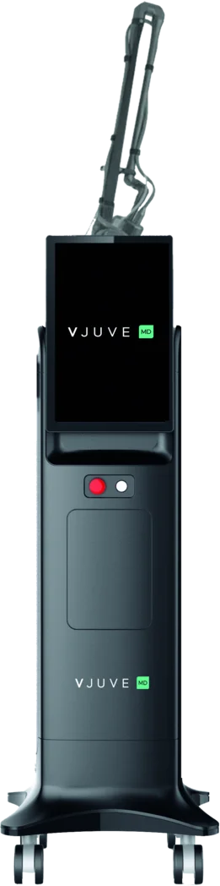
Micro channel precision Trusted in medical practiceYour skin questions, answered in person by Mr Ullas.
Downtime is the question everyone asks about CO2 laser, so we answer it properly. Here is exactly what happens, stage by stage.
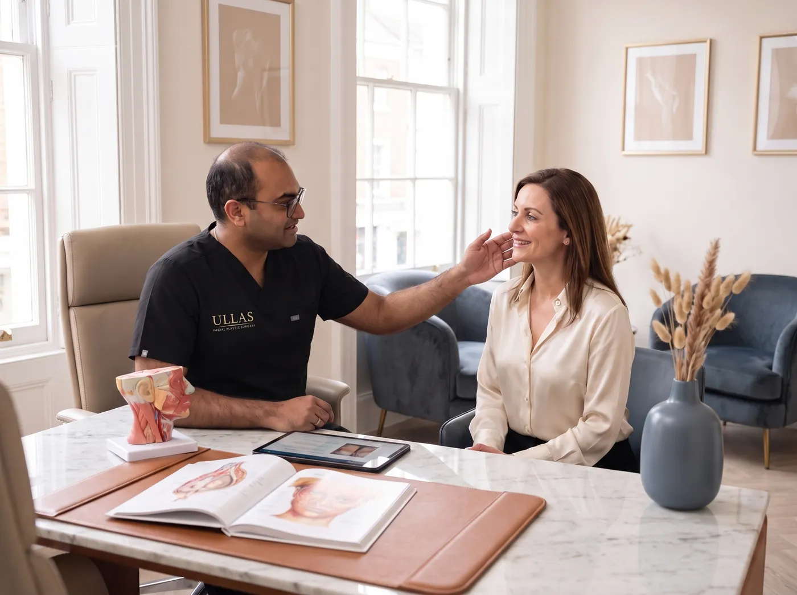
Mr Ullas examines your skin, listens to what bothers you and confirms whether CO2 laser, another treatment or no treatment at all is the honest answer. Suitability, expected recovery and risks are discussed openly.
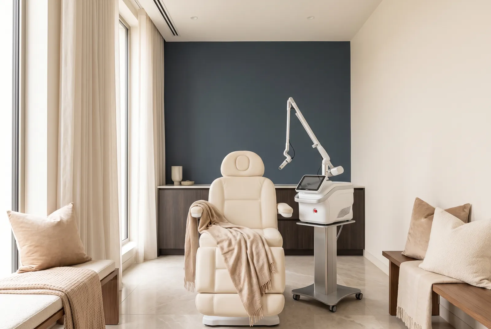
You may be given skincare to prepare your skin and asked to avoid active tanning. On the day, numbing cream goes on first, and your eyes are protected throughout.
A full face session takes around 20 minutes. Patients describe a light tickling sensation followed by warmth under the skin. You go home the same day with your aftercare plan, recovery cream and SPF guidance.
Recovery changes quickly in the first few days and every stage can look a little different. This is normal, expected and temporary.
Redness and the fine grid-like treatment marks are visible. Skin can feel warm, dry and tight as healing gets underway.
By around day five the superficial layer flakes away, with fresher skin gradually appearing underneath. Moisturise, protect, and let it happen.
Any lingering pinkness fades and the first real glow appears as the new surface matures.
The deeper remodelling continues quietly. Texture, firmness and tone keep improving for months after a single session.
"I always tell patients not to judge the treatment too early. The first few days are very much part of the recovery process, not the final result."
Mr Gautham UllasYour treatment is performed personally by a consultant facial plastic surgeon, not delegated to a technician.
Mr Ullas has used CO2 lasers through his specialist training and international fellowship, long before bringing the technology into his own practice.
Because he offers both surgery and laser, his recommendation follows what your skin actually needs, not what a clinic happens to sell.
Structured aftercare, the right recovery cream and SPF guidance, and direct follow-up through every stage of healing.
Consultations and treatments at Pall Mall Medical in Manchester city centre and Newton-le-Willows.
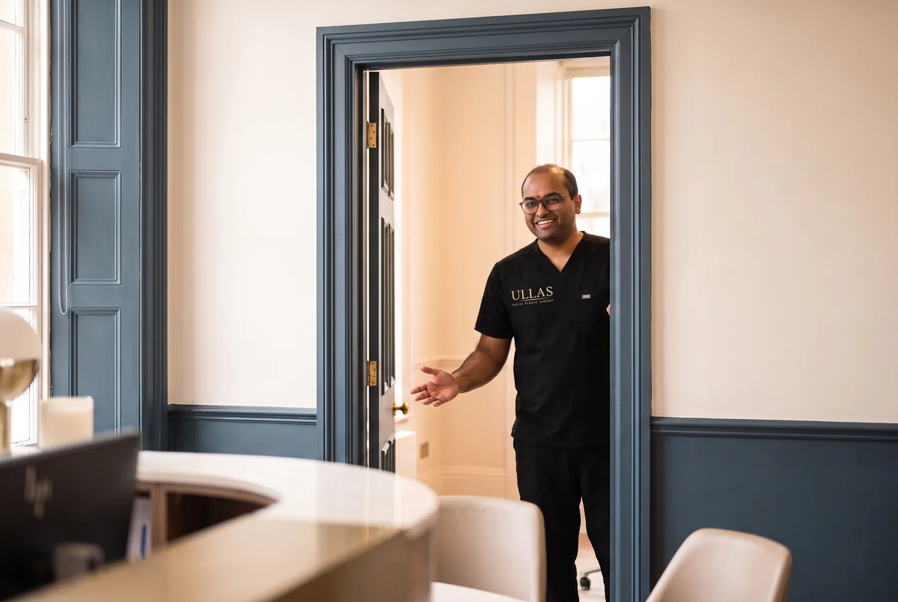
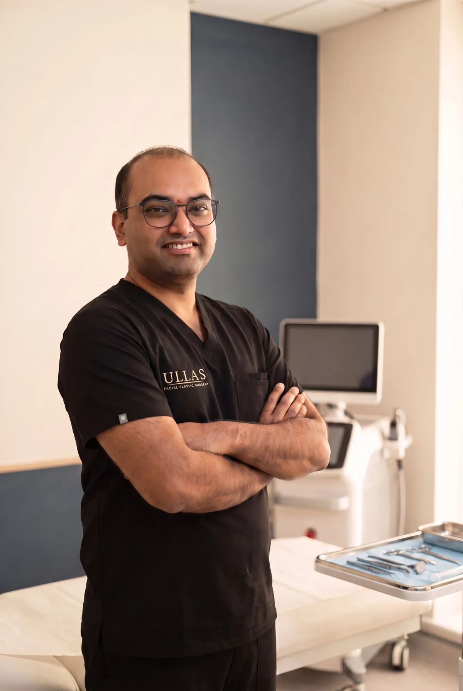
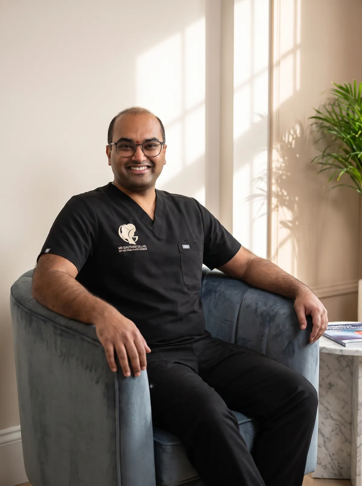
"Where art meets science."
The philosophy stitched into every treatmentMr Ullas is a consultant surgeon with dual training in ENT and facial plastic surgery, giving him a rare command of both the function and the aesthetics of the face. His fellowship training took him through advanced rhinoplasty, facial rejuvenation and reconstructive techniques alongside internationally recognised surgeons.
That surgical depth shapes how he uses the CO2 laser. He assesses skin quality the way a surgeon assesses anatomy: honestly, precisely and always in the context of what will genuinely help you, whether that is resurfacing, surgery, both or neither.
He treats every face as something to be preserved and refined, never changed beyond recognition. Natural results, careful technique and straight answers are the foundation of his practice.
Every plan starts with a consultation, so you only ever pay for the treatment that is right for you.
A complete facial renewal in a single session of around 20 minutes, performed personally by Mr Ullas.
| Treatment area | Price |
|---|---|
| Cheeks | £899 |
| Forehead | £899 |
| Around the eyes (peri-orbital) | £899 |
| Around the mouth (peri-oral) | £899 |
| Around the mouth + eyes | £1,399 |
| Neck | £899 |
| Décolletage | £899 |
| Neck + décolletage | £1,499 |
| Full face + neck | £2,499 |
| Full face + neck + décolletage | £2,999 |
| Hands | £699 |
| Small or localised scar | £595 |
| Stretch marks | £999 |
Prices are per session and confirmed at consultation once your treatment plan is agreed.
Good outcomes start with honest selection. As with any laser procedure, suitability, expected recovery and potential risks are discussed properly at your consultation.
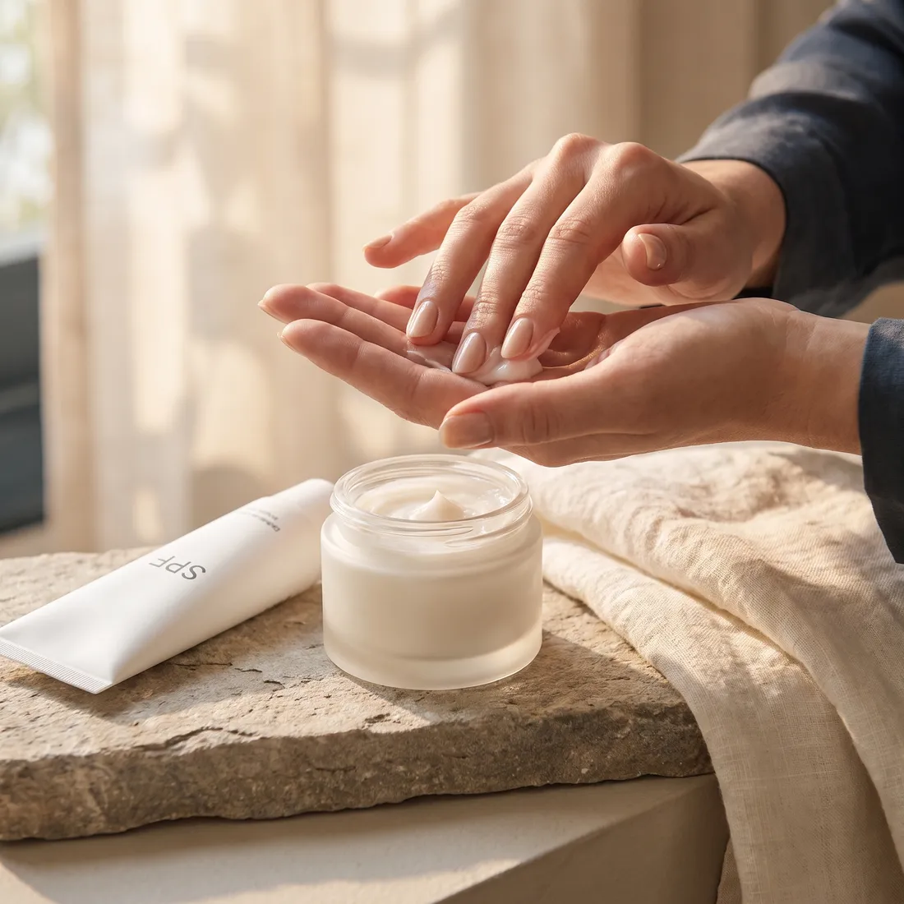
Tell us a little about you and what you would like to change. Our team will come back to you to arrange your consultation with Mr Ullas. Prefer to talk? Call 0161 520 1181.